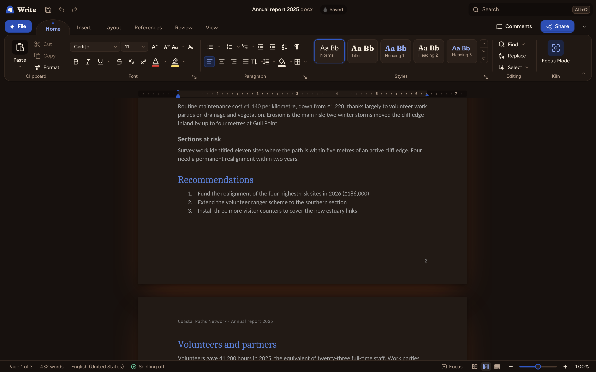
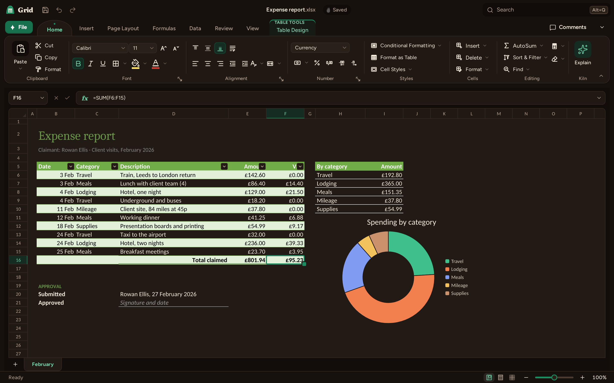
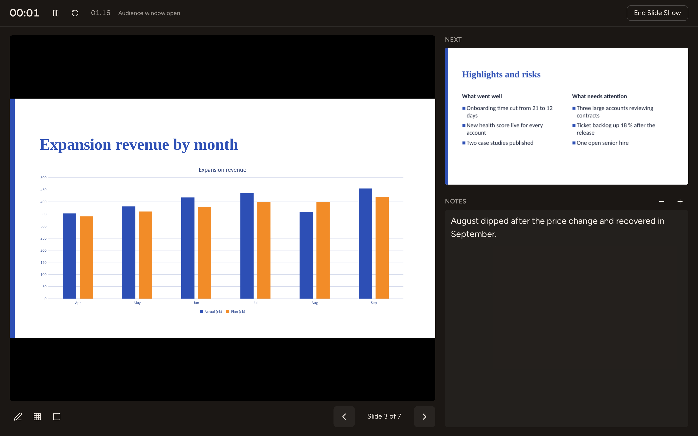

Opens and saves your files
.docx, .xlsx and .pptx directly, CSV, and PDF export. The Linux build adds OpenDocument. Macros stay in the file and do not run.

Free and open source, no account
Kiln Write, Kiln Grid and Kiln Deck read and write .docx, .xlsx and .pptx with no conversion step, under a ribbon and shortcuts Office users know, on a Rust core that runs in your browser and on Linux.


Features
Writing, numbers and presenting, with the files you already have. Nothing has to be converted first, and parts of a file Kiln does not model are copied back byte for byte.
.docx, .xlsx and .pptx directly, CSV, and PDF export. The Linux build adds OpenDocument. Macros stay in the file and do not run.
Ribbon, File menu, status bar, Key Tips on Alt and Office's common keyboard shortcuts, in a warmer design with light and dark themes.
The command palette (Ctrl+Shift+P) searches the commands by their name here or by what Office calls them.
Kiln Write and Kiln Deck documents keep their own history on your device: name a version, preview it, restore it.
Edit Kiln Write and Kiln Deck documents together, live, through a small relay you run yourself.
English, German and Arabic, with a mirrored right-to-left interface and right-to-left documents and sheets.
Apps
Each app is a glazed tile in the shape of a kiln arch, and each burns its own colour. All three open from Kiln Home. The pictures here are the built web app with sample documents, in your colour scheme and in the other one.

Documents, for Word users
One layout engine of its own for the screen, print and PDF.



Spreadsheets, for Excel users
Formulas in Excel's syntax, with dynamic arrays and LAMBDA.



Presentations, for PowerPoint users
Masters, layouts and themes from the .pptx, and a slide show with Presenter View.


Coming from Office
Office users will find the ribbon, the File menu and the common shortcuts where they expect them. The warmth is Kiln's own.


Kiln Home, a workbook from an .xlsx, an edit that moves the totals and the chart, the palette, and a deck from a .pptx. Recorded from the built web app.
Measured, not claimed
These figures are written onto this page from the reports the tests produce. Fidelity shows the worst file of each format, not the average. Nothing here is rendered in Microsoft Office: the reference is LibreOffice.
336 files, 150 of them real-world files from the test data of Apache POI and LibreOffice and the others generated, are read, written back without edits and read again. A file passes when it meets its thresholds on the scores below and LibreOffice opens the result. Structure counts facts in Kiln's own model before and after, so it cannot show what that model does not hold. Text compares what Kiln's reader finds in each file. Visual compares LibreOffice's renders of original and output at 60 dpi; nothing here renders in Office. 1.000 means no difference by that measure. Every file's score
| Format | Files | Structure | Text | Visual |
|---|---|---|---|---|
| .docx | 90/90 | 1.000 | 1.000 | 0.916 |
| .xlsx | 102/102 | 1.000 | 1.000 | 0.900 |
| .pptx | 81/81 | 1.000 | 1.000 | 0.999 |
| ODF | 63/63 | 0.979 | 1.000 | 0.812 |
The native core, 95th percentile, linux x86_64, 16 CPUs, 2026-11-03. The bars show the share of each budget used, on a root scale. Method and every run
Kiln's own list of what a switcher from Office would miss: 576 of 740 rows done. Its critical tier scores 97.8 %, weighted, and each done row names its test.
Compared
What each product says about itself, on its own pages. Kiln's column links its manual.
| Fact | Kiln | Microsoft 365 | Google Workspace | LibreOffice | ONLYOFFICE | Univer | WordCraft, GridCraft, DeckCraft |
|---|---|---|---|---|---|---|---|
| Price | Free, no account source | Free web apps with a Microsoft account; desktop apps by subscription from $9.99 a month, or Office Home 2024 once for $179.99 source 1 2 | Docs with any Google Account; Business Starter at $7 per user a month source 1 2 | Free source | Free desktop editors and Community server; Enterprise and Developer editions priced by plan source 1 2 | Free Apache-2.0 core; Free Trial (3 editing connections, 10 watermarked exports a month), Business from $99 a month, Enterprise custom source 1 2 | Free source 1 2 3 |
| Licence | AGPL-3.0-or-later source | Proprietary: licensed, not sold source | Proprietary terms source | MPL-2.0 source | AGPL-3.0 Community; Enterprise and Developer proprietary source | Apache-2.0 core; Pro packages under a commercial licence source | MIT or Apache-2.0 source 1 2 3 |
| File formats | .docx, .xlsx and .pptx read and written directly; its own .kwrite, .kgrid and .kdeck; OpenDocument in the Linux build source | Office Open XML by default source | Google's own; Office files can be edited in place and stay in Office format, or be converted source | Opens and saves Microsoft Office formats, including Office Open XML; converts them to OpenDocument source | Native .docx, .xlsx and .pptx source | Its own snapshots; imports Office files and exports .xlsx, .docx and .pptx through a backend; exports limited by plan source 1 2 3 | .docx, .xlsx and .pptx source 1 2 3 |
| Platforms | Linux and the web source 1 2 | Windows, macOS, iOS, Android, web source 1 2 3 | Web, iOS, Android source 1 2 | Windows, macOS, Linux; a viewer on Android source 1 2 | Windows, macOS, Linux, iOS, Android; web through its server source 1 2 3 4 | An SDK for browsers and Node.js source | macOS, Windows, Linux, FreeBSD, the browser source 1 2 3 |
| Offline | The installed web app and the Linux build source | Installed desktop apps, online at least every 39 days source | Chrome or Edge with the Docs Offline extension, turned on while online source | Installed desktop apps source | Desktop editors and mobile apps source 1 2 3 | Not stated source | Native desktop apps; WordCraft says spelling, grammar and everything else work offline source 1 2 3 |
| Macros | Kept in the file, not run source | VBA source | Apps Script: custom menus in Docs, custom functions and macros in Sheets source | Basic, Python, JavaScript, BeanShell source | JavaScript; VBA has to be converted source | Scripted through its Facade API source | WordCraft records macros; all three are scripted through a CLI, a JSON channel and MCP source 1 2 3 |
Get Kiln
Kiln runs in the browser with nothing installed, and keeps working offline once it has loaded. On Linux you can build the desktop app from source.
Installable, works offline, and nothing leaves the device unless you share it.
Open in browserBuild the desktop app from source. The build makes a .deb and an AppImage.
Build from sourceA .deb that registers your document types, or a portable AppImage. v0.1.0.
.deb or AppImageAn installer for 64-bit Windows. v0.1.0.
Installer (.exe)A disk image for Apple silicon or Intel. v0.1.0.
Disk image (.dmg)APKs for 64-bit and 32-bit ARM and for x86-64. v0.1.0.
APKThe test suite covers Linux and the browser. Kiln on Linux says what the build makes.
Under the hood
Documents are laid out in Rust and painted onto a canvas from a display list, and the PDF comes from the same layout.
$ git clone https://github.com/ZahakJ/kiln && cd kiln
$ bash tools/setup-rust.sh && bash tools/setup-node.sh
$ source ~/.profile
$ pnpm install
$ cargo xtask wasm --release
$ pnpm dev # http://localhost:5173
$ cargo run -q -p kiln-cli -- convert \
"e2e/fixtures/media/Annual report 2025.docx" report.pdf